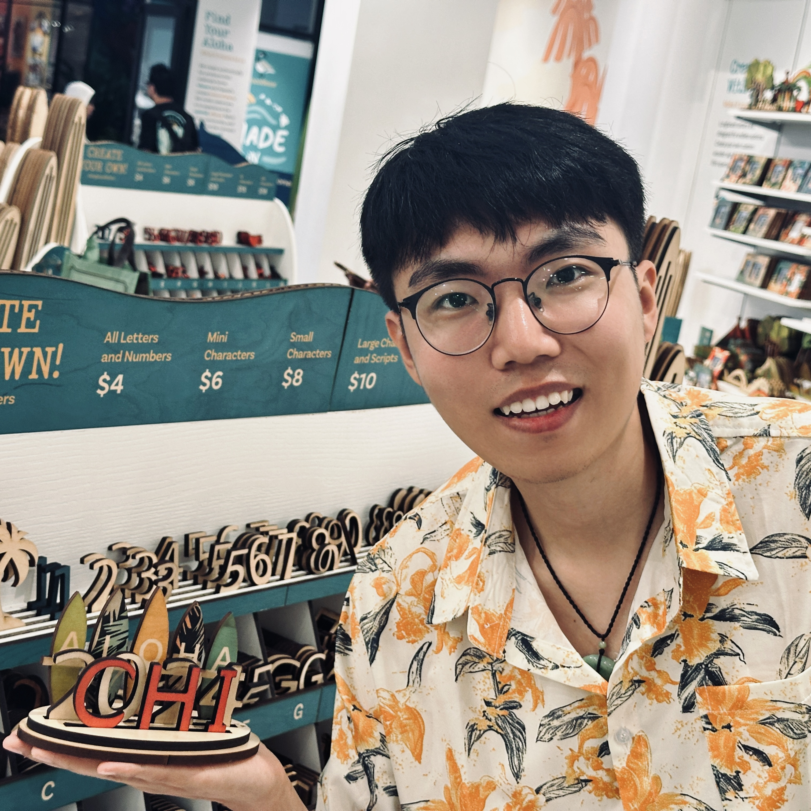

|
Hongyue Wang (王鸿岳) I am a Ph.D. student in Exertion games Lab supervised by Prof. Florian 'Floyd' Mueller working on Human-Food Interaction (Secondary Supervisor: Dr. Don Samitha Elvitigala) at Monash University, Australia. My research interest lies in the intersection of technology, design and interaction. Currently, I am towards on designing interactive system to enrich culinary creativity, and exploring embeding digital contents into our daily eating. Email / CV / Google Scholar / Twitter / LinkedIn |
 |
{kind=link}
My research interestsHuman-Computer Interaction, Extended Reality, Interactive System, Deep Learning, Computer Vision, Generative AI, etc. |
News
|
Full Paper Publications

|
Grand challenges in human-food interaction
Florian ‘Floyd’ Mueller, Marianna Obrist, Ferran Altarriba Bertran, Neharika Makam, Soh Kim, Christopher Dawes, Patrizia Marti, Maurizio Mancini, Eleonora Ceccaldi, Nandini Pasumarthy, Sahej Claire, Kyung seo Jung, Jialin Deng, Jürgen Steimle, Nadejda Krasteva, Matti Schwalk, Harald Reiterer, Hongyue Wang, Yan Wang International Journal of Human-Computer Studies, 2024 Paper |

|
MRLab: Virtual Reality Fusion Smart Laboratory Based on Multimodal Fusion
Hongyue Wang, Zhiquan Feng*, Xiaohui Yang, Liran Zhou, Jinglan Tian, and Qingbei Guo International Journal of Human-Computer Interaction, 2023 Paper |
Workshop Papers, Extended Abstracts, and Doctoral Consortium

|
pic2eat: Facilitating Social Ice-breaking through Collaborative Design of 3D Printed Appetizer
Hongyue Wang, Jialin Deng, Aravind Mohan, Yinyi Li, Hao Peng, Linjia He, Don Samitha Elvitigala, Florian 'Floyd' Mueller ACM CHI Conference on Human Factors in Computing Systems CHI 2024 Extended Abstract, 2024 [Paper] [Video] |
Miscellanea |
|
Feel free to steal this website's source code. Do not scrape the HTML from this page itself, as it includes analytics tags that you do not want on your own website — use the github code instead. Also, consider using Leonid Keselman's Jekyll fork of this page. |